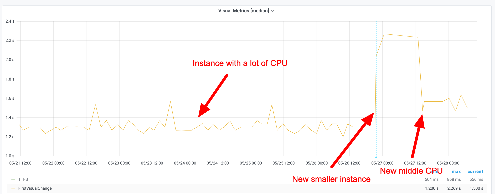
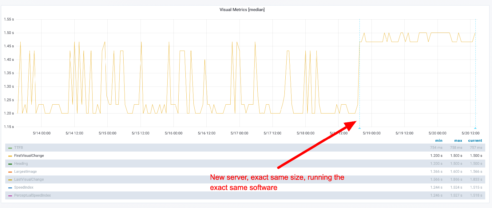
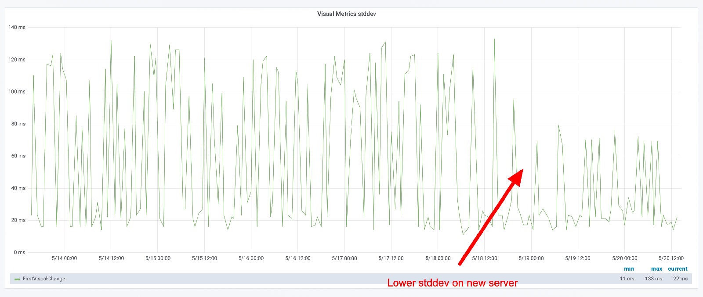
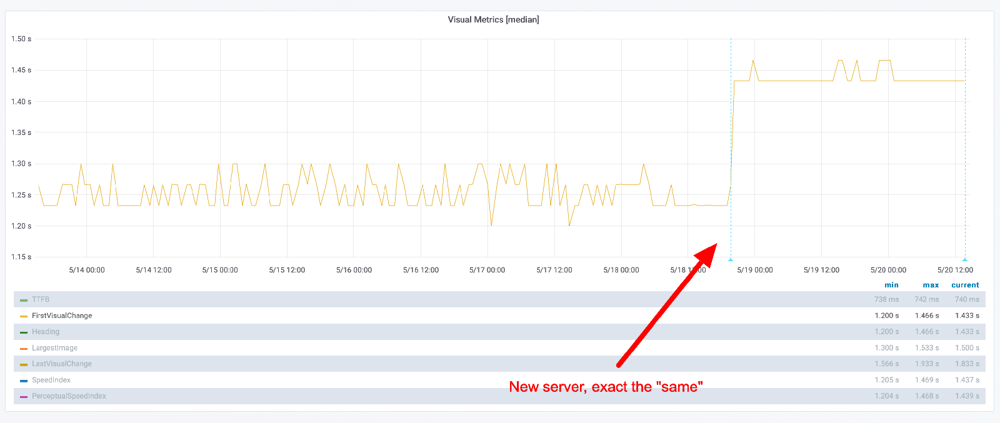
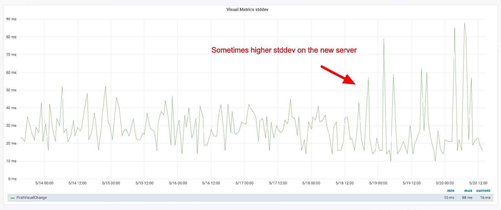
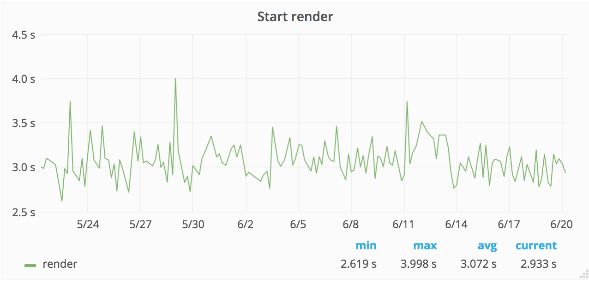
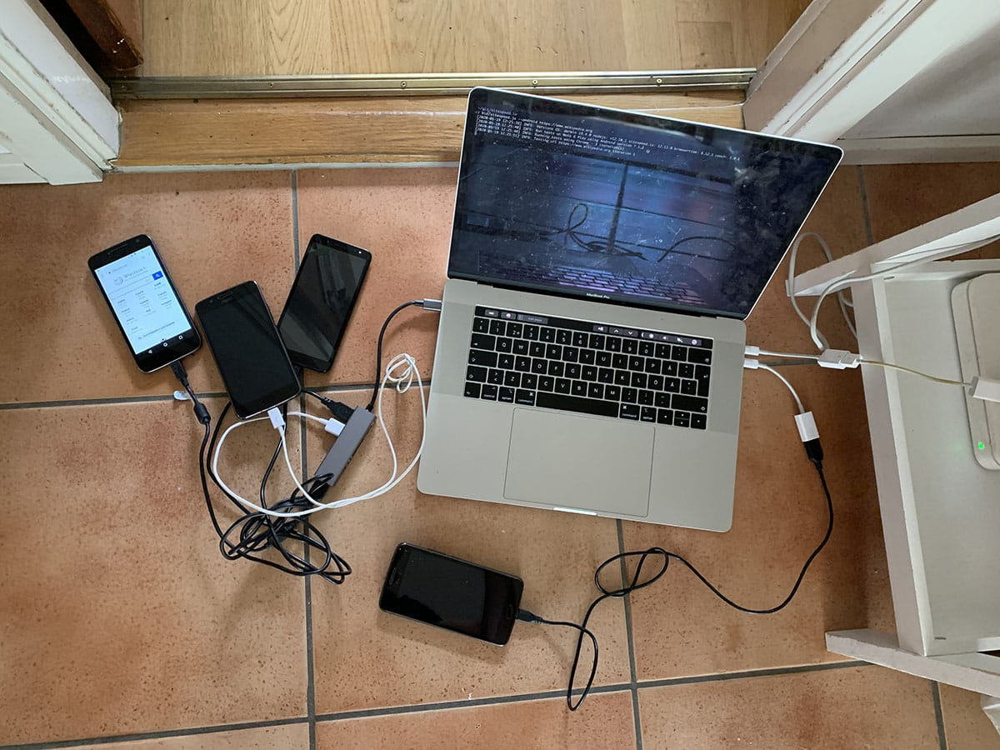
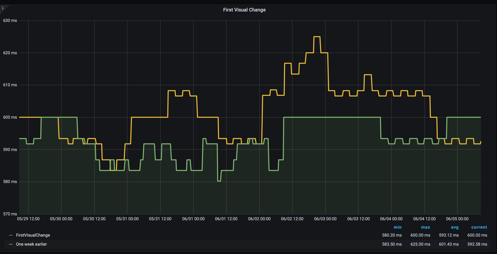
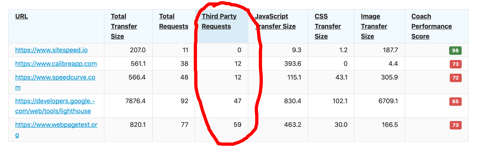

Documentation / Web performance testing in practice
Web performance testing in practice
- Start
- Setup
- Running tests using sitespeed.io
- Summary
Start #
This is a guide for you if you are new into performance testing. It will focus on synthetic testing (automatically drive a web browser and collect performance metrics). The guide will focus on using sitespeed.io/Browsertime but it mostly be generic so you can read this guide independent of the tool you use.
My name is Peter Hedenskog, I created sitespeed.io in 2012. I been a performance consultant evaluating different performance tools and I now I work in the performance team of the Wikimedia Foundation. I’ve spent many many 1000 hours testing/thinking/evaluating/creating synthetic tools and I want to share what I learned so far.
Why do performance testing #
Is performance important? There are a lot of people advocating that performance is money. That maybe true in some circumstances in some context for some sites and the only way for you to know is to try it out.
What we do know is that there’s no magic numbers in performance testing and that you need to set your own goals depending on your site and your users.
What I know is measuring the performance helps you being a better developer. Keeping track and making sure you do not introduce performance regressions is vital for you. Continuously measuring performance is the key. You can do that with real user measurement and synthetic testing. I’m gonna focus on synthetic testing since that’s my main area and where I’m got most my knowledgable.
Why do synthetic testing #
There’s a couple of good things that you get when running synthetic/lab testing:
Collecting metrics that are more related to user experience than the technical metrics the browsers provide.
In a controlled environment that typically provides consistent test results, it is easier to detect regressions. It’s easier to spot smaller regressions than with RUM.
We can see changes very quickly when testing in a lab setting, because the only variable that is changing is the code. Being confident in RUM usually takes more time: you need to have more data to see the change.
In a lab setting, we are also able to control when browser versions are updated to new versions, allowing us to detect when browser releases impact user experience. Our users’ browsers auto updates. A new browser version can affect the performance.
Lab testing and RUM (real user measurements) are best friends: synthetic testing improves your confidence in RUM and vice versa. If you see a regression in both types of measurements, you know for sure that it’s a real regression.
But everything isn’t perfect when testing in a lab: You are only testing a small usage group (a specific browser version, specific connection type, one operating system, a couple of URLs). You will miss out on a lot of users scenarios. That’s why its also got to combine your tests with real user measurements.
Setup #
Lets go through some important things when you setup your synthetic tests. You want to deploy your performance measurements tool somewhere. You want to have stable metrics. You want to be able to trust your tool. You want to have an automatic way to find regressions.
Stability is your friend #
The most important thing when setting up synthetic testing is getting rid of as much variance as possible. You need to make sure that your server performance, the internet connection, the tool so that the metrics you collect will not be influenced by something else than things that the web page.
Internet connection/connectivity #
The internet connection to your test server is probably really fast. And it can be different throughout the day. That will influence your tests.
If you throttle (making your connection slower) you can make sure you test under the same connection type all the time and making the connection slower, will make it easier for you to spot regressions in your code.
PLEASE, YOU NEED TO ALWAYS THROTTLE YOUR CONNECTION!!
If you use sitespeed.io/Browsertime you can check out our connectivity guide.
Remember: always make sure you run on a throttled connection!
Servers #
You need to run your tests somewhere and you want to make sure that nothing else in that server interfere with your tests.
Choosing server #
You can run on bare metal or using a cloud provider.
Cloud providers #
We have tested almost all available big cloud providers for sitespeed.io and I have also been testing different cloud solutions at my work at Wikimedia.
With our testing with Browsertime/sitespeed.io we have seen a big different in stability between different providers. Remember that one of the reasons to use synthetic testing is to have stable metrics. If your server is unstable over time, it will be hard for you to know if there’s a problem with the pages you are testing or the server.
In our tests AWS has worked best, but you should try yourself. When you run your tests, keep a close look at your metrics and deviation between runs.
Choosing instance type
Finding the right instance type is important: You don’t want to pay too much, you want to have stable metrics but you also don’t want a too fast instance (since that will make the difference in some metrics really small and maybe harder to see). And you also do not want to use a too slow instance since that will give you more unstable metrics.
Testing with WebPageTest we have seen that different browsers have bigger instances than other browsers, to make stable and usable tests. The instance type depends on what kind of page you are testing and how stable metric you want.
At my work at Wikimedia we’ve been using c5.xlarge on AWS for both Chrome and Firefox and both WebPageTest and Browsertime/sitespeed.io. But that is for mostly testing Wikipedia. If your site has more JavaScript and third parties it’s possible that you need to run on a larger instance.
It’s also possible that you can run on a smaller instance, I’ve seen testing government sites (with less 3rd parties and JavaScript) makes it possible to get stable metrics on smaller instances.
And also remember that all metrics will be dependent on what kind of instance type you use (CPU/memory etc). It will affect CPU metrics (long tasks etc) and all other metrics. Here’s an example of what First Visual Change looks like running on three different instance types.

Choosing an instance
One thing that is important to know that if you start an instance on AWS (and probably whatever cloud provider you use), they can have different performance than another instance of the exact same type! Netflix has seen a difference in 30% in performance and when they spin up a new instance, they actually spin up three, runs some measurements and then takes the fastest one.
We have also seen difference in performance and stability at the Wikimedia Foundation. Different instances can have different performance and stability. That’s why we are not fans of spinning up many new instances and run the test on them and then destroy them. That will give you a bigger difference/stability in metrics than keeping one instance up and running for a long time.
However keeping one instance (or multiple instances) isn’t a bullet proof solution. We have seen performance shift over time on one instance (remember a cloud server is just someone else computer and others use that computer too so you can get the noisy neighbour effect). That’s why you need to keep track of deviation of metrics over time to make sure that you can find when instances change.
Lets look at some graphs. Here’s an example where we switched to a new instance, the exact same instance type, running the exact same code. You can see that the new instance is slower but much more stable metrics.

You can keep track if how “unstable” the metrics are by looking at the standard deviation. Here you can see the standard deviation when we replayed on a same size instance.

These metrics will be different depending on the URL you test (as long as you run different CSS/JavaScript). Here’s another URL that we tested when we deployed on a new instance. Yeah, much more stable metrics.

But look at the standard deviation. You can see that the max difference is now higher, but in general it looks like the deviation is lower.

Its important that you keep track of standard deviation for your metrics and look for changes!
Tuning your instance #
Before you start to run your tests, there are a couple of things you can do to tune your instance before you start to run your tests. It depends on the OS you are using but it general you should only run security updates automatically. For example, running on Ubuntu you can make sure you run unattended upgrade automatically.
Another good thing is to make sure you monitor your server to keep track of memory, disk and CPU usage. That can help you find reasons why performance metrics are unstable.
Running on bare metal #
Running on bare metal servers helps you to avoid the noisy neighbour effect. However it doesn’t automatically fixes your problem. You still need to configure/tune your OS to get stable metrics. There’s a couple of things you need to do:
Pin the CPU governor
Set the CPU governor to performance. The CPU governor controls how the CPU raises and lowers its frequency in response to the demands the user is placing on their device. Governors have a large impact on performance and power save. You need to configure your server to have the same frequency all the time. If you are using Ubuntu you should set the governer to performance and pin the frequency. You can do that with cpufrequtils or the newer cpupower (by installing the linux-tools that match your kernel).
Install sudo apt-get install cpufrequtils and checkout the help page. The key is to pin the min and the max frequence to be the same.
Check how many cores and min and max frequency by running cpufreq-info. Then you can see how you can set the frequency with cpufreq-set --help.
Say that the max frequency for your server is 4.00 GHz you want to pin it to use 2.00 GHz (in practice you want to match the frequency with what your users have and you can do that with the CPU benchmark). They you use the cpufreq-set command.
cpufreq-set -d 2.00Ghz -u 2.00Ghz -g performance
That sets the governor to performance and pin it to 2.00Ghz. Then you need to do that for all your cores. You choose core with -c so if you have two cores you should run:
cpufreq-set -d 2.00Ghz -u 2.00Ghz -g performance -c 0
cpufreq-set -d 2.00Ghz -u 2.00Ghz -g performance -c 1
Choose DNS server
Which DNS server that is used can make a big difference. Keep a look at your DNS times and make sure they are stable. If not read the manpage on how to change it.
Open files
Number of open files can be quite low on Linux, check it with ulimit -a. Increase following these instructions.
Running on Kubernetes #
If you are gonna use Kubernetes, you should use the bandwith plugin to set the connectivity. If you Kubernetes user, please share your configiratuon and setup so we can add that to the documentation.
Mobile #
To run mobile phones tests you need to have a phone and somewhere to host your phone.
Mobile phones #
The most important thing when monitoring performance using real mobile phones is that you test on the exact same mobile all the time. The same model is not the same as the same phone. Even though that you run tests on the same model, running the same OS you can get very different result.
The Facebook mobile performance team wrote about it and we have seen the same at Wikipedia. That’s why solutions where you cannot pin your tests to an exact phone is useless for monitoring. You can still use those tests to get a “feeling” for the performance but its too unreliable for monitoring.
A couple of years ago we tested with Chrome, measuring start render on Wikipedia using a Moto G4 on WebPageTest and the result (median) looked like this:

The problem was that we where running on different phones (but same model) and we are pretty far from the flat line that we want.
There’s a workaround for this problem: when you set the CPU/GPU performance and pin those, you will get more stable metrics. To do that you need to run your test on a phone where you can use root.
What phones should you use? If you plan to run tests on Android you should aim for a phone in the middle market segment. Using slow phones is good for showing the performance for some of your users, but getting stable metrics on slowish phones are hard. I’ve been using Moto G4 and G5. At Wikimedia we run phones that matches our 75/95 percentile of our users performance.
One problem running tests on Android is that when the phone temperature gets high, Android will change CPU frequencies and that will affect your metrics. To avoid that you can check the battery temperature before you start your tests (that’s implemented in Browsertime/sitespeed.io). You can also root your phone and then set the frequency for you CPU so that it will not change. That is supported for Moto G5 and Pixel 1 using Browsertime/sitespeed.io (thank you Mozilla for contributing that part).
Mobile hosting #
To run your test you can either host your own mobile phones and drive them through a Mac Mini, Raspberry Pi or find a hosting solution that can do the same. At the moment we do not have any recommendations for hosting, except for hosting the solution yourself. If you use sitespeed.io we have a pre-made Raspberry Pi to run your tests.

Number of runs #
You want to have stable metrics so you can find regressions. One way to get more stable metrics is to make many runs and take the median (or fastest) run.
The number of runs you need depends on the servers you use, the browser (and browser configuration) and the URL that you test. That means you need to test yourself to find what works for you. For example at Wikimedia we get really stable metrics for our mobile site with just do one run using WebPageReplay as a replay proxy. But for the English desktop Wikipedia we need 5/7/11 runs for some URLs to get more stable metrics (because we run more JavaScript that executes differently). And for other languages on Wikipedia we need less runs.
You should start out by doing 5 runs. How big is the difference between your runs? Is it seconds? Well then you need to increase the number of runs. You will probably have some flakiness in your tests, but that is OK, as long as you can see regressions. The best way to find what works for you is to test over a period of time. Check your metrics, check your min and max and the deviation over time.
But vendor X of tool Y says that 3 runs is enough?
I’m pretty sure this is the same for all tools as long as you test with real browsers. It depends on your server, your browser and the page you test. You need to test to know!
Browsers #
Your page could render differently in different browsers, since they are built in different ways. It’s therefore important to test your page in multiple browsers. Using sitespeed.io you can use Chrome, Firefox, Safari and Edge. But it takes time to test in all browsers, then start to test in the ones that are the most important for you.
Browser change for each release so it is important to upgrade the browser you use in the tests, the same way your users browsers are updating. If you run the sitespeed.io Docker containers, we release a new tagged version per browser version. You can then update in a controlled way.
It’s really important to be able to rollback browser versions in a controlled way so that you know if a metric change is caused by the browser the by your website or your environment. It’s essential to be able to pin your tests to a browser version.
Choosing metrics #
Through the years of performance testing different metrics has been the golden child: loadEvenEnd, first paint, Speed Index, RAIL, Googles Web Vitals and more.
All these metrics try to answer the question: Is your web page fast?
What we do know looking at the history of performance testing is that the “best” metric will change over time. Which one should you choose? If you look at all metrics that are collected it’s easy to feel confused and not know which metrics that is the most important. Since metrics changes over time, I think its important to collect as many as possible (so you have the history) and then focus on one or a couple of them.
You can either focus on performance timing metrics (like First Visual Change, Total Blocking Time etc) or you can use a score that is calculated with how performant you have created your web page and server. Using timing metrics is good because they are usually more easy to understand and reason about, using a performance best practice score like the Coach score is good because it will not change depending of the performance of the server that runs your test.
Using the Lighthouse performance score combine both timing metrics and a best practice score. The problem with that is that the score will be different depending on what server and what connectivity the server use. When your boss test your web site using Google Page Speed Insights she/he will get a score that differs from what you present in your performance report with metrics from your test server (even though that you use the same tool). That’s no good for you as a developer when you want to build trust in your metrics.
Do your company/organization have a way to study your users and finding out what metric is important? Start with that. If you can’t do that, focus on a metric that are important for you as a developer and that you are responsible for. One metric that should be independent of third parties is First Visual Change/First paint. If it is not that for you, that’s your first mission: make sure your first paint are independent of others.
When to run your tests #
When should you run your tests? Well it depends, what do you want to do with the numbers you collect?
If you run tests against your competition comparing your web site against others, you could run the tests once a day or a couple of times a day.
If you wanna find regressions you want to run your tests as often as possible or at least as often as you release or do content changes in production. You can follow our instructions on how to continuously run your tests.
Choosing URLs #
What pages should you test? What user journeys are the most important ones? If you are new doing performance testing, I think its important to start small. Start with a couple of URLs to test (the most important one of your websites) and focus on one or two user journeys. Test them continuously and watch the metrics.
If you have an active content team that can update HTML/CSS/JavaScript on your pages directly on production, you should also test using crawling. That way you can find problems on pages that you normally do not test.
Getting stable and useful metrics #
Getting stable metrics is hard. If you are in any doubt, look at Performance Matters” by Emery Berger.
If you have throttled the internet connection, deployed on a stable server there are still some things you can do.
You can also use a replay server to try to minimize the noise. The sitespeed.io Docker container includes WebPageReplay that the Chrome team use. Mozilla use mitmproxy. You can choose which one that works best for you.
Another way is to look at metrics trends and compare metrics with one week back in time to find regressions. This is a technique that Timo Tijhof been using for a long time and we adopted it in sitespeed.io years ago.

A good way to test the stability of your tests is to setup a static HTML page on your server. You can take one of your important pages, store the page as HTML and make sure the CSS and JavaScript and images are the same over time (hard code so the correct versions are used). Add that page to your tests to see what kind of variance you get. Continue to test that page as long as you run your tests, to have a baseline for your tests.
Dashboards #
One of the most important things to keep control of your performance is graphing the metrics. Having graphs to show your co-worker or your boss is vital. Many performance tools use their own home built dashboard. Don’t use that. You should use Grafana. Its the best monitoring/dashboard tool that is out there (and it is Open Source). If you haven’t used it before you will be amazed. Sitespeed.io ships with a couple of default dashboards but with the power of Grafana its easy to create your own.
What extra great (for you) is that Grafana support multiple data sources, meaning you easily can create dashboards that gets data from your sitespeed.io runs, integrate it with your RUM data and with your business metrics like conversion rate. The potential with Grafana is endless.
Choosing tools #
You are ready to start running performance tests, what tools should you use? I personally think you should use sitespeed.io or Browsertime:
- We have all the metrics you need and you can add your own metrics. It is fully flexible.
- You can build your own plugins that can use other tools or data storage.
- You own your data, is in full control of metrics and you can scale your testing as you want.
- You can deploy the tests wherever you want and be in full control if instance size and types.
- We got the most powerful testing there is on Android devices.
- You will use Grafana to graph your graphs. Grafana is used by Cern, NASA and many many tech companies like Paypal, Ebay and Digital Ocean and it will surely work for you too.
- We have a lot of documentation and we are really fast at helping you if you create a issue at GitHub.
- We got the best looking logos :D
The only problem with sitespeed.io is that there’s many (of the paid) tools that think you should avoid sitespeed.io, maybe you have seen this poster before?
What’s important is that you try out different tools and choose which one you like the best. Don’t listen to performance consultants that get some extra money on the side from the synthetic tool providers, instead test and choose yourself!
sitespeed.io #
Sitespeed.io is the main tool to collect performance metrics, store the data and graph it. You can also use it to drive WebPageTest, GPSI, Lighthouse and create your own plugin. GitLab uses sitespeed.io as their performance tool.
Browsertime #
Browsertime is the engine that starts the browser and get the metrics. The outcome is raw JSON. Use Browsertime if you are building your own performance tool. Mozilla use Browsertime in their performance tests.
Other tools #
If you for some reason don’t want to use Browsertime or sitespeed.io I’m gonna help you with some questions you should ask your potential synthetic monitor solution provider. You can use these questions when you compare different providers so you get a feeling for what they can do and which you should choose.
- Browser and metrics:
- Browser support: Which browsers can you use to get performance metrics? - there are tools out there that only can get metrics from Chrome. That will work fine for you as long as all your users and developers only use Chrome and you only aim for users that will use Chrome forever. Of course your tool need to support more browsers.
- How many runs per URL do you recommend? Can you choose between min/median/max values? - Can you increase the number of runs to get more stable values? Can you choose which run to pick? You wanna be able to change this to try out what works best for your web site.
- If they use a video how many frames per second? - higher FPS needs better hardware and traditionally WebPageTest is using 10 fps for video and that may be OK for you, depending on how exact metrics you think you need. Ask to get the raw video and check the quality.
- Can you run on different connectivity types? - when you collect SpeedIndex and other metrics you wanna make sure that you can choose different connectivity types for your tests to be able to test as different users. Make sure that they use real throttling using TC or Dummynet.
- Can you add your own metrics? - you want to be able to collect metrics from the User Timing API or run your arbitrary JavaScript to get your own metrics.
- Can you choose browser versions for your tests? And when is browsers updated to a new version? - handling browser and versions is crucial. There will be browser bugs or performance issues so you want to roll back versions in your tests. And you want to install new versions when your users starts to use them.
- Servers and stability
- Where can I deploy test agents? - are they using their own cloud, or can you choose locations yourself from different cloud providers?
- How stable is the metrics using your tool? - you want to test and calibrate the tool. Do they run the tool on a separate server or do they run multiple tests at the same time that can have a negative impact on your metrics?
- Can I use your tool inside our own network? - do you wanna test on stage or your own machines with the same tool, make sure you can use the tool from wherever you want.
- Can I upgrade/downgrade the test agent servers (number of CPUs/memory)? - if they run in the cloud for example using AWS you wanna make sure you can choose instance size because I’ve seen so much problems running WebPageTest on too small instances on AWS.
- Mobile
- Can I use real devices (both Android and iPhones)? - you really want to be able to test on real devices!
- What browsers can I use on your device - can you choose browsers so you can test on the most important browsers for you?
- Who owns the data?
- Do I own my own data/metrics? - who owns the data they collect? Can you access the raw data or only through their tool? Can you export the data to your own servers? Will they sell you metrics to other companies?
- If I stop using your product how do I migrate the metrics to our new system? - are you locked into the platform or can you move the metrics?
- Cost and failures
- Can I see exactly how much it will cost (in dimes and dollars)? - some vendors work with points or things like that. You wanna avoid that because you wanna see exact in dollars how much it will cost.
- If a run fails, what happens then? - there’s a vendor out there where you pay extra for a retry. Avoid it. If the tool doesn’t work, the vendor should pay, not you as a customer.
- Does it cost extra to change the User Agent? - some things costs extra, because it is an extra cost for the company providing the services: adding a real device etc. But other things like changing the user agent.
- Supporting or abusing Open Source?
- Are your synthetic testing tool using any Open Source projects? - If not and they still use Speed Index etc you need to ask how they do it and how you can confirm they do everything right.
- Are you following the license of the tool you use? - You need to ask this question! Are any of the Open Source tools they use under the GPL license (for example WebPageTest uses software under GPL), so they contribute back changes.
- Do you contribute back to the tool? - If you as a vendor build things on top Open Source tools I think it’s good karma to contribute back your changes independent on license. You can see it like this: If the company uses Open Source tools but don’t contribute back, the company are more willing to trick you.
- If there’s a bug in the Open Source tool, what do the company do? - some companies do upstream fixes (good!), some companies just say that its something they can’t fix (bad). Ask them about problems they had so far and how they fixed them.
- How do you know if a company is abusing Open Source? If the company built their tool on another Open Source tool and very profitable, they are probably abusing Open Source. Watch out for tweets like this:
Another important thing is privacy. I think its’s pretty easy to check if the tool you wanna use care about privacy of your data by checking how many third party tools the tools web site use. Here’s what the number of third parties requests looks like for a couple of tools:

Best is to check yourself when you are evaluating a tool.
Running tests using sitespeed.io #
Lets talk about running tests on sitespeed.io.
Testing on desktop #
Run your tests on Desktop is the easiest tests to run. You can choose to run your tests in a ready made Docker container or you can invoke the NodeJS package directly.
The Docker container comes with pre installed Chrome and Firefox (latest stable versions) and all dependencies that is needed to record and analyse a video if your test to get visual metrics. We release a new Docker container for each stable Chrome/Firefox, that way you can rollback versions easily. What’s also good with the Docker container is that you start a new container per test, so everything is cleaned between tests. The drawbacks with running in a container could be slower metrics and only support for running Chrome and Firefox. If you are new to using Docker you should read our Docker documentation.
If you use the NodeJS version directly you can run tests on Safari and MS Edge as long as your OS support it. To a record a video and analyse it and get visual metrics, you need to install those dependencies yourself. You can checkout our GitHub actions how you do that:
You also need to manage the browsers by manually update them when there’s a new version. There’s more work to keep your tests running but you are also in control and can test on more browsers.
Testing on mobile #
You can try to emulate mobile phone testing by running your tests on desktop and emulate the browser by setting another view port, user agent and slow down the CPU. But its hard to emulate the performance of a real device.
Using sitespeed.io you can test on Android and iOS devices. Android more support for performance metrics (video/visual metrics). When you test on mobile phones you need prepare your phone for testing (enabling access/turning off services) and we have all that documented in the documentation for mobile phones.
Our work together with Mozilla has made Browsertime/sitespeed.io the most advanced performance measurement tool for Android, you should really try it out!
Testing user journeys #
By default sitespeed.io test your page with a cold cache test. That means a new browser session is started per run with the browser cache cleaned between runs. However you probably have users that visits multiple pages on your web site. To measure the performance of multiple pages (during the same session) you should use scripting.
With scripting you can test the performance of visiting multiple pages, clicking on links, log in, adding items to the cart and almost everything what the user can do.
What data storage should I choose (Graphite vs InfluxDB) #
By default sitespeed.io support both Graphite and InfluxDB and you can write your own plugin to store metrics elsewhere.
But what should you choose? We recommend that you use Graphite. We use Graphite in our setup so Graphite will get a little more love. Keeping an Graphite instance up and running for years and years is really easy and the maintenance work is really small.
But when should you use InfluxDB? Well, almost never :) The great thing with Grafana is that you can have different data sources so even if your company is already a hard core InfluxDB users, your Grafana instance can get data from both Graphite and Grafana.
Summary #
If you wanna use sitespeed.io for your synthetic monitoring testing you can dig deeper into the documentation. If you have problems/issues the best way is to create an issue at GitHub. That way others also can help out and can find the solution. If you have a bug, it super useful if you help us creating a reproducible issue.
If you want to chat about setup you can do that in our Slack channel.